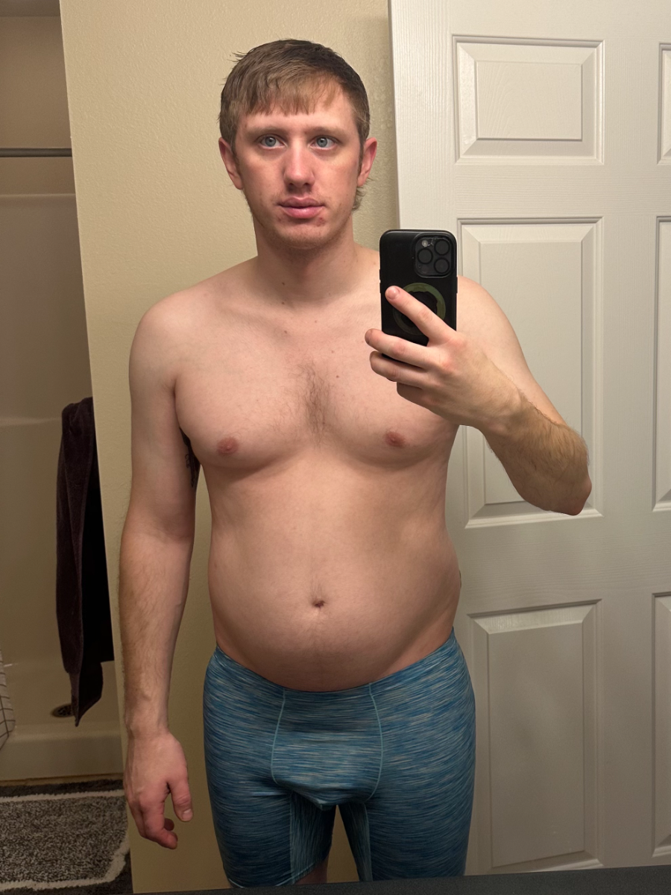
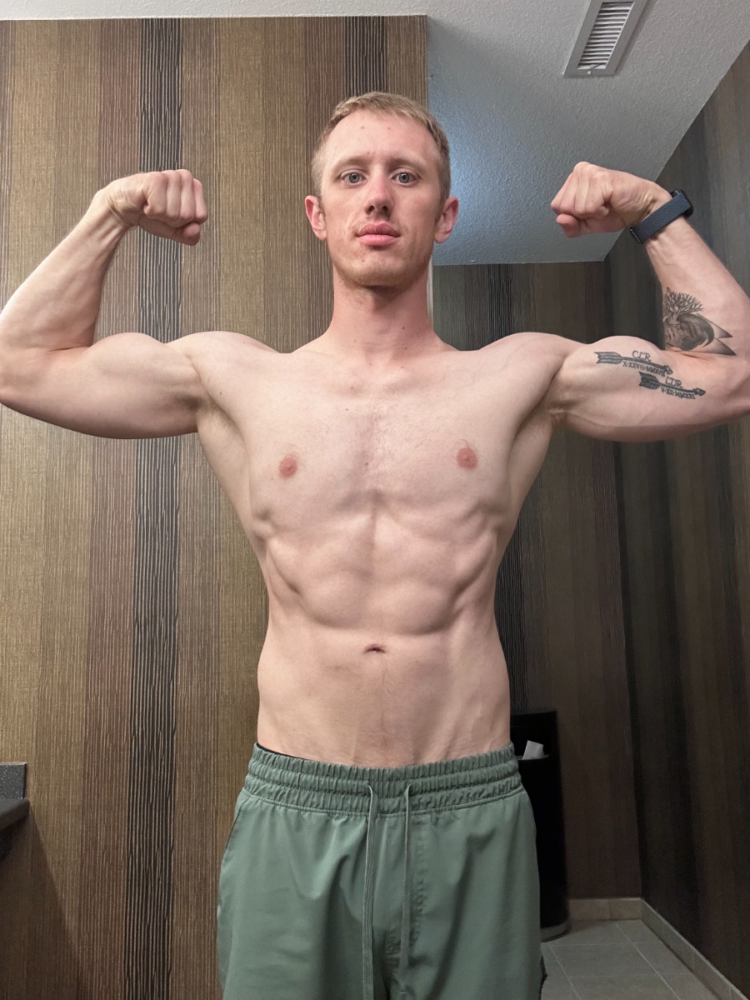

Where I Started
Most of my life I was relatively thin, without much muscle.
For most of my life I stayed under 175 pounds. Around the time I turned 30, I went through a divorce, and over the next year or two the weight slowly accumulated. I also felt like I could eat like I used to when I was younger and more active. I figured it was just age, my metabolism slowing down like everyone says.
My work uniforms told the story before I wanted to admit it. I moved the buttons on my work pants to buy myself more room, then outgrew that too and had to go up two full sizes. Eventually I got up to 200 pounds. That is when I decided I needed to make a lifestyle change. Not just a quick fix, but something that would give me lasting results and never let me get up to 200 pounds again.
Looking For Answers
I started with the usual advice: hit the gym, eat healthier.
I felt great starting to go to the gym. The first two weeks I was sore a lot, but that faded the more I worked out. I figured out how to lift weights and I was getting stronger. But "eating healthier" left me with more questions than answers. How much of the healthy food was I supposed to eat? How much protein should I eat? Should I stay away from carbs? These questions sent me down the right path.
The Rabbit Hole
Tracking calories and macros is what actually moved the needle.
I started tracking my calories and macros. I made a daily step goal and hit it every day no matter the circumstances. The weight started coming off, and I got better and more efficient at the whole process over time. At first I would bring a food scale with me to work and weigh my food before I ate it, then I figured out if I prep all my food and only bring prepped food with me, I could not overeat. I got so consistent with meal prep that I felt lost on days I didn't have meals ready. That was the habit doing its job.
These are what I call the Base Habits. They were essential to my success. And it is why it drives me crazy hearing people online talk about all these different diets and foods that are really healthy, because any diet with a name or any "healthy food" does not tell you how much to eat, only what you can and can't eat. Learning how simple it can be to see success in weight loss made me want to help people with it.
Tracking my food also showed me something I had not admitted to myself. I have always been the type who cannot get enough food, finishing my kids' plates, going back for more, never turning down a donut. Once I got strict with myself and started being honest about what I was eating, I realized I had been binge eating. My wife noticed before I fully admitted it. She pointed out that I was not going back for more, was not finishing the kids' food anymore, and was saying no to a donut or a brownie. That was not normal for me, but it was the behavioral change I needed to see consistent results.
A Setback
Four months in, I had hernia surgery.
Four months into losing weight, I got a hernia. I felt like this was going to be a major setback and kill my progress. One whole month resting and not able to lift weights or walk as much as I had been, at first I thought of it as a death sentence to my progress and habits I had built. But I had already built the habit of being more honest with myself and that led me into thinking how I can use this time and not waste it.
I had surgery in the beginning of May 2025. This was the month of school for my kids, as many parents know, this is a busy time. I got to be more involved with my kids, read books, and prepare myself for getting back on the path of weight loss. After my recovery was over, I eased myself back into training and my full diet program. I saw even better results over the next four months.
The Result
I lost about 40 pounds in 9 months.
From January 10, 2025 to October 6, 2025, about 9 months, I went from 200 pounds down to 158 pounds. That's 42 pounds.
I loved the way I looked and felt each week, watching the consistency do the work.


Where I Am Now
These days, I cycle through bulking and cutting, and I have learned to love the process.
I run a push pull legs split, three days on with one day off, and track my training and food with apps such as MacroFactor, MacroFactor Workouts, and my custom spreadsheet. I review my weight trends weekly and make changes based on what my data shows. I have been doing this cycle of building muscle then cutting fat over and over while documenting how my body responds. This hands-on experience is exactly what I bring to coaching. I am not just teaching theory, I am teaching what I have lived.
My first cut lasted nine months, and I could not wait for it to end so I could start building muscle. When I finally did, I got uncomfortable with how much fat came with it and rushed into a cut earlier than I planned. I did my second cut, got leaner than before, then went on a couple vacations and put a little fat back on. Within this time I was more focused on gaining muscle. I kept going for a few months with a slight calorie surplus, because I knew at any moment I could flip the switch and go through a fat loss period. When I got uncomfortable again, I cut back down. And the process repeats.
That impatience, the rushing, the frustration when it did not go perfectly, taught me the same thing that got me started in the first place. Real change is a lifestyle, not a single event you finish and move on from.
Why I Coach This Way
This is the same system I now teach.
Track your intake. Get your steps in. Build habits you can repeat. It works for me, and it can be adapted to nearly anyone. It is what I teach.
Outside The Gym
I am based in Howell, Michigan.
I am 32 years old. I work full time as an overhead crane technician, working 40 to 70 hours a week. My work can be very physical at times, as well as mentally exhausting. Some days I don't know how to fit it all in. I really try to balance work and family time the best I can.
I have two kids from a previous marriage. I try to stay involved at their school, helping out where I can and attending PTO meetings. I work on homework and reading with my kids after school, usually while I cook dinner. We love going camping, giving the kids lots of time with their grandparents where we can all be together, bike rides, taking the dogs to go run and get their energy out, and planning our next big adventure.
I got remarried in October 2025 to my wife Jessie. We have two dogs, Tucker and Lyra. Making the decision to be more active has made an effect on my whole family. My kids get to actually be kids more, there is less screen time because we just go outside for a bike ride or to a park. My dogs get to be more active and have a more fulfilling life, and trust me, Lyra needs it. And my wife sees the benefit in all of this and is extremely supportive.